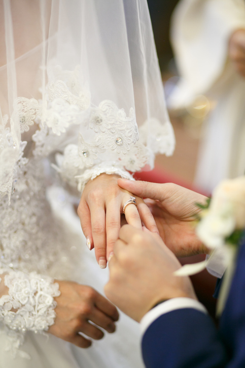
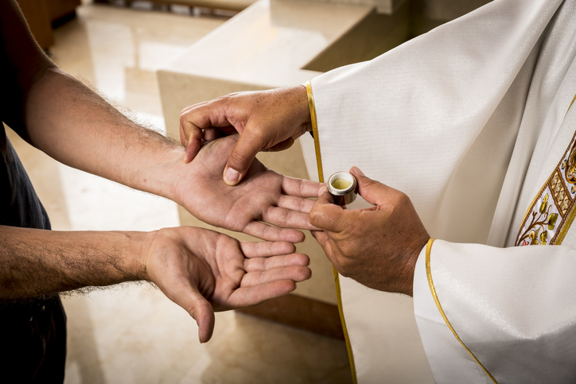

Baptism
"Catechesis aims to bring about in the believer an ever more mature faith in Jesus Christ, a deeper knowledge and love of his message, and a firm commitment to follow him."
If you are Catholic and would like to have your child baptized, we ask that you reach out to the office to schedule and to receive more information.

Baptisms are held every first Saturday of the month.
The chosen Godparents, also known as sponsors, are to be practicing Catholics and living examples of a Christ-centered life. They must have received the the Sacrament of Baptism and Confirmation. Sponsor letters for all Godparents are required no later than two weeks before the scheduled Baptism.

Marriage
Congratulations on your engagement!
We're overjoyed to celebrate with you with on your big day, but even more excited to help you prepare for the rest of the journey beyond your wedding day.
Preparing for marriage a year to complete. To start the process, please call the Parish Office for details.
Communion for the Homebound
We all are called to care for each other, attending particuarly to those who may be separated from us physically, ensuring that no one is separated from us spiritually.
It is through Holy Communion that we bring the true presence of the Lord to the sick, the aged, and the homebound.
If you or someone you know needs a visit from a homebound minister for this purpose, please call the parish office.

Anointing of the Sick

It is through the Sacrament of Anointing that Jesus touches the sick for spiritual healing: that with the Holy Spirit, the sick is given the gift of peace and courage to deal with the pain and suffering that accompany serious illness or the frailty of old age.
There is no need to wait until a person is at the point of death to receive the Sacrament of the Anointing the Sick.
A family member or a friend of anyone who is facing a serious illness, or of advanced years, is encouraged to call the office to arrange for a pastoral visit.
Funeral Mass
The loss of a loved one is a time of sadness and grief. However, in our faith there is joy in the belief that a funeral represents the passing of the beloved into eternal life -- a realization that brings great at this difficult time.
At the time of death, the funeral home is usually called first. Their staff will offer compassionate services and will call the church to schedule a funeral Mass. The funeral mass is where we gather to give praise and thanks for Christ’s victory over sin and death, to commend the deceased to God’s tender mercy and compassion, and to seek strength in this time of need.
Beyond merely an expression of grief, the funeral mass is an act of worship.